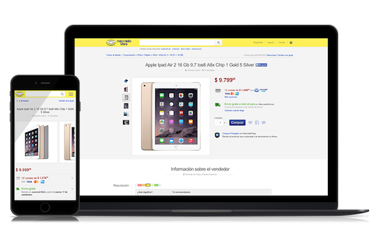
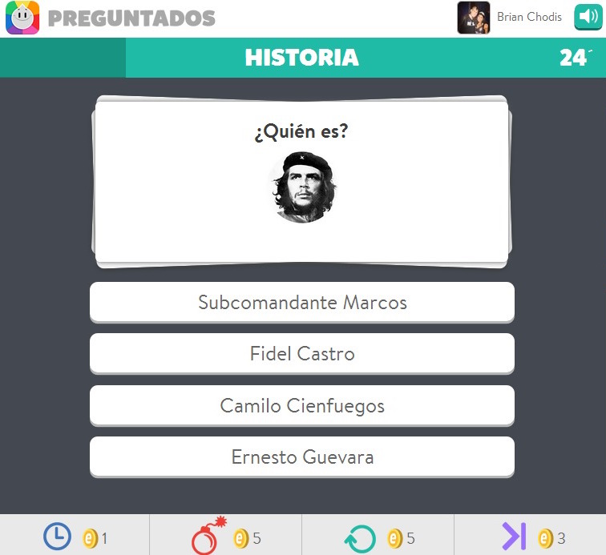
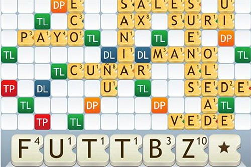
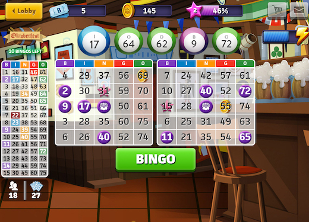
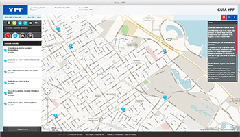
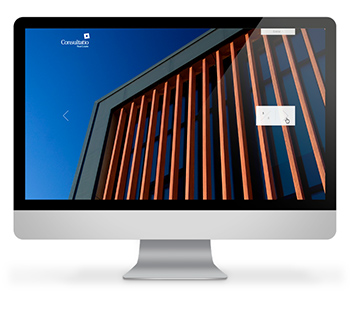

MercadoLibre
E-commerce
Currently working for mercadolibre.com, South America's biggest e-commerce platfom. I'm in re-designing the whole css arquitecture in the company with a modular, maintainable, mobile-first perspective.
Also teaching people there about sass, efficient selectors, performant animations and efficient dry coding.
2015 - MercadoLibre

TriviaCrack*
HTML5 Video Game
*Known as Preguntados in spanish.
Number one mobile game in the App Store and Google Play for several months worldwide.
I was part of a 3 members team developing the front-end of the game for the web. The challenge, as all games, was to care of animations that should perform at a constant 60fps.
For the technology stack, we used Grunt, Backbone and Less as the css preprocessor.
Currently the webapp is used in a very well known TV show in Argentina.
2014 - Etermax

Apalabrados
HTML5 Video Game
Was part of a 2 memebers team. The work consisted of a complete refactor of the code with a new stack of technology focusing on maintainability. Also new features were added with a complete re-design of the app.
The game consits in a async online crossword puzzle. It is very successful in Spain.
2013 - Etermax

BingoCrack
HTML5 Video Game
It's a real-time bingo game with sockets.
Developed the whole UI of the game, including all animations. First made all of them with the greenSock JS animation library, but they weren't performing as fluid as desired, so I migrated them to CSS3 using hardware accelerated animations. Compared performance of each one of them cross-browser using developer tools and fps meters. In conclusion made the perfect blend between greenSock and CSS3 animations.
2013 - Etermax

One Ocean
Website
Involved in the whole UI design and development. For this real estate project I designed the FlexyPics UI component as it required a very visual and original responsive and adaptive layout.
Also led the whole front-end development of the project.
2013 - BridgerConway

YPF
Website
Biggest petrochemical company in Argentina, and one of the biggest companies in the region
Led the front-end team of three people in the development of the “YPF” site. We developed it from zero, attention to design and scalability of the code were our major concerns. Later worked in conjunction with Accenture in the implementation of it in Visual Studio.
2012 - BridgerConway

Guía YPF
Webapp
Led the project and programmed the entire front-end “Guía YPF“ site.
The main feature are the maps using the Google Maps API 3 which showed several layers of information of locations and routes from all around Argentina for travellers.
2012 - BridgerConway

Iberostar
Website
Was part of a team in the front-end development of the booking system of this very well known international hotels brand.
This was a large project where many people were involved. The back-end was made by a company in Spain.
2012 - BridgerConway

TECHO
Website
Front-end development for the 2012 anual founds recollection of the Techo para mi país organization. The site was online for just one month during the anual recollection. Also helped designing the wireframes of the home page. The site was only online for one month during the anual recollection but you can see it hosted in my server here.
Ad honorem work.
2012 - JV

Consultatio
Website
Made the entire front-end develovment for this real estate company site.
2011 - BridgerConway

Oceana
Website
Real estate project.
For this project I was only involved in the front-end development. The highlights are the Google Maps API3 Location viewer and the Floorplans visualizer with ajax functionaly.
2011 - BridgerConway

Historias
Website
For this very well known film studio here in Bueno Aires we designed a very original UI where you can navigate the studio's work with mouse movement. This horizontal layout (rather than vertical) was proposed to respect the movies widescreen film proportions. Another interesting feature is that the site was programed usig ajax for a more dynamic navigation.
2011 - JV

Omint
Website
Omint is one of the biggest health insurance companies in the country
Developed most of the front-end of the site, and it was a big one! Also involved in it’s integration in DotNetNuke.
2010 - BridgerConway